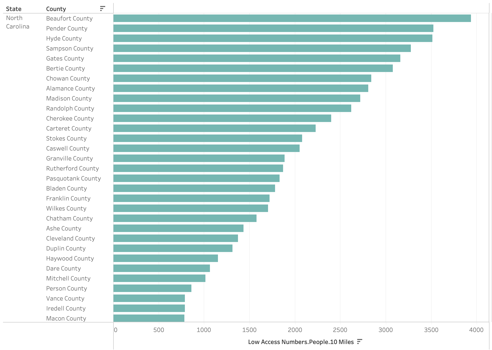

Yejin (Gina) Jang
Access to nutritious and inexpensive food has become a crucial issue in North Carolina's rural areas, particularly for vulnerable groups such as children, low-income families, and seniors. The Office of Disease Prevention and Health Promotion, emphasizes the importance of this access for maintaining a healthy diet. The scarcity of grocery stores in these places severely limits these demographics' capacity to obtain basic food, raising possible health hazards. This huge imbalance necessitates targeted policy measures and solutions aimed at closing the food access gap and providing equitable dietary health chances for all community members.
The target problem is to address food access challenges in rural areas, especially focusing on children, low-income families, and seniors. Rural areas often suffer from what are known as food deserts—places where access to affordable, healthy food options is limited because grocery stores are too far away. This lack of access contributes to a range of health issues, including higher rates of obesity, heart disease, and diabetes. Furthermore, the demographics in focus often face additional barriers due to limited mobility, financial constraints, or lack of awareness about healthy food options. By targeting these away from 10-mile from a supermarket, this aims to highlight the areas most in need of policy intervention and support.
Focusing on vulnerable groups like children, low-income individuals, and seniors, specific data columns are chosen from the CORGIS Dataset Project:
The dataset comes from the US Department of Agriculture's Economic Research Service and provides an overview of food access in the US. It is effective in identifying food deserts in rural locations with considerable geographic and economic restrictions, despite potential biases such as data currency and ignored food delivery services.
We selected data for our research based on a 10-mile radius around supermarkets in order to better understand the problem of food access in rural areas, where geography is a major factor. Focusing on seniors, low-income families, and children allows us to highlight the populations most impacted by these issues. This method helps us acquire a whole view of the problem at hand, along with taking age and economic status into account. It is not only about how distant someone lives from a supermarket; it is also about how difficult it is for them to get to that store because of their unique situation. With this thorough insight, more focused and efficient programs to increase these vulnerable people' access to food can be developed.

The bar chart shows how many people in various North Carolina counties struggle to find a supermarket within 10 miles. Organized from the most to the least affected, it highlights places like Beaufort and Pender Counties as particularly challenged. While its straightforward design makes comparing counties simple, it doesn't show us how big a part of each county's population is affected or give us a clear idea of where these people are located. This missing information, such as the density of the population and their exact locations, is important for making detailed plans, like deciding where new food stores or better bus routes might be needed.
The choropleth map was created in Tableau and shows an interactive map detailing the proportions of people in North Carolina who are 10 miles away from a supermarket. The design allows users to see not just raw numbers, but the percentages that these numbers represent within the larger context of each county's population. Hovering over a county reveals a tooltip with detailed proportion data, including proportions of low-income individuals, children, and seniors. The choice to include proportions is based on prior research indicating the importance of understanding not just the presence of food access issues, but their scale relative to the population affected.
Using the Tableau visualization tool to investigate food access in North Carolina yielded key findings. Hyde County has the largest proportion of vulnerable populations (children, low-income people, and seniors) residing more than ten miles from a supermarket. Chowan, Gates, and Bertie counties followed closely behind.
After looking into North Carolina's data, we find a new important task: checking how bus routes or ride-share options impact getting to food stores in rural areas. This task would link how far people are from stores to what transport is available.
To do this, the visualization tool would get an upgrade to show transport networks. By adding information on where buses and ride-shares go, right on the existing map, users could easily see how transport affects food access. This update would also let users turn the transport view on and off, making it clear whether improving transport could help tackle the food desert issue, pointing towards effective policy changes.
The tool we developed reveals a picture of food access in North Carolina, particularly affecting children, seniors, and low-income families in rural areas. It shows that solving food access isn't just about putting more stores on the map; it's about considering who can reach these stores and how. This suggests policies should not only encourage the setup of more local food sources but also improve transport links and support income levels to make food more accessible. Historical trends, like the shift towards larger supermarkets, highlight the importance of these policies. We also see that integrating economic and transport data with food access information can guide better policy-making.
Creating this visualization taught us the importance of balance—between showing enough data to inform and not so much that it overwhelms. Tools like hover details and filters worked well to manage this. One challenge was making sure the map was clear and informative at a glance, which we achieved by focusing on key data points. For future projects, adding layers for additional context, like economic conditions or public transportation, could offer deeper insights.